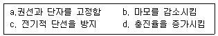
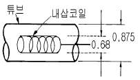
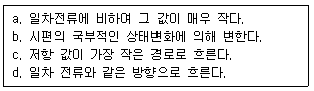

와전류비파괴검사기사(구) (2004-05-23 기출문제)
1과목: 와전류탐상시험원리
1. RFEC(Remote Field Eddy Current)에 대한 설명으로 틀린 것은?
- 전통적인 와전류탐상시험법과 마찬가지로 전도체에만 적용 가능하다.
- 비자성체에 적용시 대개 전통적인 와전류탐상시험법에 비해 감도와 정확도가 떨어진다.
- 강자성체에 대한 시험이 가능하다.
- 전통적인 ECT에 비해 내· 외면 결함분류가 용이하다.
(정답률: 알수없음)

2. 와전류탐상시험에서 전도체에 유도되는 와전류의 성질 중 맞는 것은?
- 유도된 와전류의 크기가 코일에서 흘려주는 전류 크기보다 크다.
- 유도된 와전류는 검사체의 자기투자율 변화에 영향을 받지 않는다.
- 유도된 와전류로 인하여 전도체에서 열이 발생하지는 않는다.
- 유도된 와전류는 코일에서 발생한 자장 밀도와 관련이 있다.
(정답률: 알수없음)
3. 와전류탐상시험에서 서로 근접하고 있는 불연속을 분리하여 검출하는 시스템 특성으로 정의되는 것은?
- 결함 분해능
- 비교 측정
- 상등급 분류
- 차등 신호
(정답률: 알수없음)
4. 비파괴검사법 중 와전류탐상시험의 장점은?
- 시험대상 이외의 요인에 의한 신호방해가 작다.
- 시험속도가 빠르며 자동화가 가능하다.
- 결함의 종류 및 내부검사가 용이하다.
- 강자성 금속에 적용이 용이하다.
(정답률: 알수없음)
5. 와전류탐상시험 탐촉자에 평면형 코일을 장착하고, 탐촉 자표면에 에폭시로 코팅하는 이유로 짝지어진 것은?

- a,c,d
- b,c,d
- a,b,c
- a,b,d
(정답률: 알수없음)
6. 리프트-오프(Lift off)의 변동에 의해 발생되는 임피던스의 변화는 다음 중 어느 경우에 가장 심한가?
- 시험품에 비전도체 도포가 되어 있을 때
- 코일이 시험품과 접촉되어 있을 때
- 저주파수를 사용할 때
- 직경이 큰 코일을 사용할 때
(정답률: 알수없음)
7. 와전류탐상 시험장비의 분류방법에 해당되지 않는 것은?
- 임피던스 시험
- 위상분석 시험
- 변조분석 시험
- 펄스-에코 시험
(정답률: 알수없음)
8. 인덕턴스가 100μH이고, 저항이 5Ω인 시험체를 200kHz의 시험주파수로 와전류탐상검사할 때 코일의 임피던스는?
- 125.7Ω
- 135.7Ω
- 145.7Ω
- 155.7Ω
(정답률: 알수없음)
9. 그림과 같이 0.68인치의 내삽코일을 사용하여 외경 0.875인치, 두께 0.⑤인치의 튜브를 와전류탐상법으로 검사할 때 충전율(fill factor)은?

- 0.769
- 0.877
- 1.140
- 1.299
(정답률: 알수없음)
10. 저항성분이 없는 순수한 인덕턴스 회로에 교류를 가하면 전류는 전압과 몇 도의 위상차를 보이는가?
- 90도
- 180도
- 270도
- 360도
(정답률: 알수없음)
11. 모든 철강 재료에서 탄소함량을 증가시키면?
- 물질의 저항을 감소시킨다.
- 물질의 포화자속밀도를 증가시킨다.
- 물질의 투자율을 감소시킨다.
- 물질의 보자력을 감소시킨다.
(정답률: 알수없음)
12. 와전류탐상시험의 표준시험편을 결정할 때 중요하지 않은 사항은?
- 표준시험편은 시험체와 동일한 크기 및 형상이어야 한다.
- 표준시험편은 시험체와 동일한 열처리 과정을 거친 것이라야 한다.
- 표준시험편은 부식방지를 위해 표면처리된 것이라야 한다.
- 표준시험편의 표면 상태는 시험편과 동일한 상태라야 한다.
(정답률: 알수없음)
13. 다음 중 와전류탐상시험의 단점은?
- 정확한 전기전도도를 측정할 수 없다.
- 시험누락을 방지하기 위해 저속으로 검사해야 한다.
- 와전류 신호에 영향을 끼치는 재료 인자가 많다.
- 작은 결함을 탐지하기 어렵다
(정답률: 알수없음)
14. 내삽형 코일로 관을 검사할 때 다음 중 가장 좋은 충진율은?
- 0.75
- 0.90
- 1.00
- 1.15
(정답률: 알수없음)
15. 강자성체의 포화 자기장의 세기는 일반적으로 재료의 조건에 따라 변화한다. 다음 설명 중 가장 알맞는 것은?
- 탄소의 함유량이 적은 것이 크다.
- 냉간 가공을 할수록 작아진다.
- 담금질 할수록 작아진다.
- 뜨임질(annealing)한 것보다 담금질(quenching)한 쪽이 크다.
(정답률: 알수없음)
16. 재료에 걸린 하중이 제거될 때 원래의 모양으로 돌아가는 성질을 무엇이라 하는가?
- 소성
- 탄성
- 비소성
- 비탄성
(정답률: 알수없음)
17. 시편에 유도된 와전류의 특성들로 짝지어진 것은?

- a,b,c,d
- b,c,d
- a,b,d
- a,b,c
(정답률: 알수없음)
18. 주어진 주파수에서 다음 중 와전류 침투깊이가 가장 큰 재료는?
- 납(7% IACS 전도도)
- 구리(95% IACS 전도도)
- 청동(15% IACS 전도도)
- 알루미늄(35% IACS 전도도)
(정답률: 알수없음)
19. 교류자화에 있어서 표피효과에 대한 설명으로서 옳지 못한 것은?
- 자속밀도는 표면에서 최대가 된다.
- 표피의 두께는 교류의 주파수, 전기전도도 및 투자율이 낮을수록 작아진다.
- 표피효과 때문에 교류자화에 있어서의 자속밀도는 표피의 평균적인 값에 불과하다.
- 자속밀도가 표면치의 37%가 되는 깊이를 표피의 두께라 한다.
(정답률: 알수없음)
20. 와전류탐상시험에서 불연속의 신호와 잡음신호의 위상이 다른 경우, CRT상에서 잡음에 대한 포인트의 이동이 수평방향으로 움직인다면 불연속 신호에 의한 포인트의 이동은?
- 수평방향의 포인트 이동으로 지시된다.
- 수직방향의 포인트 이동으로 지시된다.
- 위상차에 상응하는 각도의 포인트이동으로 지시된다.
- 포인트 이동이 전혀 없는 것으로 지시된다.
(정답률: 알수없음)
2과목: 와전류탐상검사
21. 회전형 탐촉자(Spining probe) 와전류탐상장치의 사용으로서 가장 유효한 것은?
- 표면과 표면근방의 개재물 검출
- Overlap과 seam 등과 같은 표면결함의 검출
- 내부 Piping이나 파열의 검출
- 시험체의 두께변화 검출
(정답률: 알수없음)
22. 튜브형 강자성체에서 자장의 자속밀도에 가장 큰 영향을 미치는 변수는? (단, 자화력 H는 일정하다고 가정한다.)
- 제품의 표면 거칠기
- 제품의 직경
- 제품의 관두께
- 제품의 길이
(정답률: 알수없음)
23. 표면코일(surface coil)을 사용하여 직경이 작은 tube를 검사할 때의 장점이 아닌 것은?
- 검사속도가 빠르다.
- 작은 균열까지 검출이 가능하다.
- 자동 및 수동 탐상이 모두 가능하다.
- 불연속부의 원주상 위치측정이 가능하다.
(정답률: 알수없음)
24. 와전류탐상시험에서 시험편의 결함위치를 정확히 탐지할 수 있는 탐촉자는?
- 회전탐촉자(Spinning probe)
- 포용 코일(Encirclin coil)
- 내삽형 코일(Inner coil)
- 평면형 코일(probe coil)
(정답률: 알수없음)
25. 관통코일로 환봉을 탐상할 때 환봉의 지름이 120mm, 코일의 지름이 140mm이면 충전(진)율은?
- 0.857
- 0.735
- 1.167
- 1.361
(정답률: 알수없음)
26. 자기비교방식의 시험 코일을 사용하여 배관의 일정한 두께감육을 검출하기 어려운 이유는?
- 표준시험편과 시험체의 형상이 동일하므로
- 두 코일의 응답 차가 거의 없으므로
- 단일 주파수로만 검사가 가능하므로
- 두께감소로 인해 충전율이 낮아지므로
(정답률: 알수없음)
27. 와전류를 이용한 도막 두께 측정의 수행시 사용하는 교정곡선(도막 두께와 지시계의 관계)이 포함하고 있는 기준항목이 아닌 것은?
- 소지 금속의 종류
- 도막의 종류
- 시험 코일의 종류
- 시험자 인적사항
(정답률: 알수없음)
28. 다음 중 피로균열 검사에 있어서 가장 적절한 전류는?
- 직류
- 교류
- 반파정류한 교류
- 반파정류한 직류
(정답률: 알수없음)
29. 와전류탐상시험에서 임피던스 변화의 검출 방법에 의한 시험방법이 아닌 것은?
- 임피던스 시험
- 주파수 변조 시험
- 위상 분석 시험
- 변조 분석 시험
(정답률: 알수없음)
30. 와전류의 침투 깊이에 관련된 인자가 아닌 것은?
- 자화 방향
- 시험 주파수
- 재료의 전도성
- 재료의 투자율
(정답률: 알수없음)
31. 직경 2인치의 검사코일내에 직경 1.5인치의 봉이 놓여져 있을 때 fill factor는 얼마인가?
- 0.753
- 0.563
- 0.375
- 0.263
(정답률: 알수없음)
32. 다음 중 콜드셧(cold shut)이 발생되는 제품과 일반적으로 검사가 용이한 시험법으로 바르게 된 것은?
- 단조품 - 자분탐상검사
- 주물품 - 와전류탐상검사
- 단조품 - 와전류탐상검사
- 주물품 - 자분탐상검사
(정답률: 알수없음)
33. 자동처리 와전류 탐상장치로 시험체를 검사할 때 보정과 감도수준 조정으로 권고할 만한 방법은?
- 어떤 전기적 선원 방법
- 다른 바파괴시험 방법
- NBS 표준에 의한 방법
- 표준시험편으로 시험하는 방법
(정답률: 알수없음)
34. 코일을 통과하는 전류의 흐름이 최대가 되려면 용량기에 어떻게 조정되어야 하는가?
- 용량 임피던스는 발진기 임피던스와 같아야 한다.
- 용량 리액턴스는 최소이어야 한다.
- 용량 리액턴스는 유도 리액턴스와 같아야 한다.
- 용량 임피던스는 최대이어야 한다.
(정답률: 알수없음)
35. 와전류탐상장치에서 일반적으로 사용되는 판독장치가 아닌 것은?
- 미터기(meter)
- 기록계(chart recorder)
- 음극선관(cathode ray tube)
- 전압계(voltmeter)
(정답률: 알수없음)
36. 대비시험편의 취급과 보수 관리에 있어서 주의해야 할 점이 아닌 것은?
- 대비시험편은 조심해서 취급하며 구부러짐, 요철 등이 생기지 않도록 한다.
- 대비시험편의 녹의 발생을 막기 위해 라카 등을 두껍게 발라 사용한다.
- 대비시험편의 재질, 치수, 결함크기등을 잘 알 수 있도록 표시해 놓는다.
- 대비시험편의 표면을 무리하게 연마해서는 안되며 가열 등을 피한다.
(정답률: 알수없음)
37. 코일의 감은 회수를 두 배로 증가시키면?
- 인덕턴스가 두배로 증가
- 인덕턴스가 반으로 감소
- 인덕턴스가 4배로 증가
- 인덕턴스가 1/4배로 감소
(정답률: 알수없음)
38. 와전류탐상시험의 선형 시간축(Linear time base)을 이용한 장비에 있어서 어떤 형의 신호가 수평 편향판에 적용되는가?
- 선형 전압
- 구형파 전압
- 톱날파 전압
- 증폭변조된 선형 전압
(정답률: 알수없음)
39. 와전류탐상시험으로 전도체 재료 위에 비전도체로 코팅된 두께를 측정할 때 어떤 현상을 이용하는가?
- Lift-off Effect
- Skin Effect
- Edge Effect
- End Effect
(정답률: 알수없음)
40. 다음 중 불필요한 고주파 잡음을 없애기에 적합한 것은?
- 발진기
- 저주파 pass필터
- 위상 분리기
- 코일 임피던스 정합기
(정답률: 알수없음)
3과목: 와전류탐상관련규격
41. 개인이 각종 정보를 제공받고 관리하기 위해 사용하는 것으로 메모에서부터 워드 프로세서, 인터넷, 게임 등을 제공하는 컴퓨터는?
- PDA
- PCA
- HDA
- HCA
(정답률: 알수없음)
42. KS D 0232에서 규정한 대비시험편에 대한 설명이 바르게 설명되지 못한 것은?
- N-0.6은 홈깊이 0.6mm인 각진 홈이다.
- N-25%는 흠깊이가 관 호칭두께의 25%인 각진 홈이다.
- D-1.2는 지름이 1.2mm인 드릴구멍이다.
- D-15%는 지름이 관두께의 15%인 드릴 구멍이다.
(정답률: 알수없음)
43. KS D 0232에 의해 관의 바깥지름 25㎜, 두께 3㎜인 강관을 와류탐상시험하기 위해 대비시험편을 만들려고 한다. N-5%의 인공결함 깊이는 얼마로 해야 하는가?
- 0.5㎜
- 0.3㎜
- 0.2㎜
- 0.15㎜
(정답률: 알수없음)
44. KS D 0251에서 비교시험편의 인공 흠의 종류중 줄홈에 대한 설명으로 맞는 것은?
- 나비는 1.5mm 이하 또는 홈 깊이의 3배중 작은 쪽의 값 이하이다.
- 길이는 50mm 이하이다.
- 깊이의 허용차는 ±15%로 한다.
- 각도는 60° 로 한다.
(정답률: 알수없음)
45. KS D 0232에 따라 강의 와류탐상검사시 다음 설명 중 잘못된 것은?
- 탐상기는 발진기, 전기적 신호를 처리하는 전기장치, 표시장치 등으로 구성된다.
- 인공 흠의 가공은 방전가공, 부식 또는 기계가공으로 한다.
- 원형봉강의 대비시험편의 인공 흠은 드릴구멍으로 한다.
- 시험은 목적에 따라 제품의 가공 또는 처리공정에서 적절한 시기에 한다.
(정답률: 알수없음)
46. KS D 0232에서 와류탐상 시험결과 얻어진 지시가 시험체의 흠에 의한 것인지 결함에 의한 것인지 의심스러울 때는 어떻게 조치하도록 규정하고 있는가?
- 설계자와 협의한다.
- 지시이므로 결함으로 간주한다.
- 재시험 또는 다른 방법으로 확인한다.
- 기록계를 점검후 교체한다.
(정답률: 알수없음)
47. 컴퓨터 시스템이 실제 주기억장치 용량보다 몇 배 이상의 데이타를 저장할 수 있게 하는 기억장치 관리 방법은?
- 전하 결합소자
- 가상기억장치
- 레이저 기억 시스템
- 자기버블기억장치
(정답률: 알수없음)
48. 통신에 사용되는 음성, 영상, 데이터 등의 정보를 전송하기 위해서는 파일 전송을 위한 통신규약이 필요하다. 파일 전송에 사용되는 프로토콜이 아닌 것은?
- xmodem
- kermit
- vmodem
- zmodem
(정답률: 알수없음)
49. ASTM E 215에 따른 이음매없는 알루미늄합금 튜브의 와류탐상시험을 위한 1차 비교시험편이 가져야 할 인공불연속은?
- 1개의 관통구멍
- 3개의 평저공
- 4개의 평저공
- 6개의 평저공
(정답률: 알수없음)
50. ASME code에서 내삽형 코일로 튜브를 검사할 때 나타나는 신호의 진폭은 어떻게 변화되겠는가?
- 충전율(Fill Factor)이 커질수록 커진다.
- 속도가 커질수록 커진다.
- 리프트 오프(Lift-off)가 커질수록 커진다.
- 말단효과(End Effect)가 커질수록 커진다.
(정답률: 알수없음)
51. KS D 0232에 의한 시험 장치의 주된 구성은 탐상기, 시험코일, 기록장치, 이송장치 및 자기포화장치로 구성된다. 이 중에서 생략할 수 있는 장치는?
- 시험코일
- 기록장치
- 이송장치
- 자기포화장치
(정답률: 알수없음)
52. 다음 중 HTML Tag의 사용이 잘못된 것은?
- <HEAD><TITLE>가로선 긋기</HEAD></TITLE>
- <A HREF = "http://www.aaa.domain"> 심마니로</A>
- <IMG SRC = "data/art1.jpg" width="250" height="100" border = "10">
- <BODY BACKGROUND = "data/background.jpt" TEXT ="#ff0000"></BODY>
(정답률: 알수없음)
53. ASME 규격에 따라 동관을 와류탐상시험할 때 허용 탐상속도보다 큰 속도로 검사하고자 한다. 취해야 할 조치는?
- 신호대 잡음비를 낮춘다.
- 최대허용 탐상속도가 28인치/sec를 넘지않도록 한다.
- 요구하는 검출 감도를 만족하는지를 입증한 후 탐상속도를 높인다.
- 시험주파수를 낮추고 감도 레벨을 높인다.
(정답률: 알수없음)
54. ASTM E 243에서 규정한 교정시험편을 만들 때 인공결함을 사용한다. 이 규격에서 정한 인공결함의 조합 종류는 몇 가지인가?
- 3가지
- 4가지
- 5가지
- 6가지
(정답률: 알수없음)
55. ASME Sec.V, Art.8에 따라 열교환기 비자성튜브를 와전류탐상시 보고서에 기술하여야 할 필수 내용이 아닌 것은?
- 신호진폭
- 튜브 벽두께 방향으로의 지시깊이
- 튜브길이 방향위치 및 지지율로부터의 위치
- 주사 속도
(정답률: 알수없음)
56. ASTM 규격에서 코일이 관의 끝 부분을 통과할 때 발생하는 신호를 무엇이라 하는가?
- Speed Effect
- Edge Effect
- Skin Effect
- End Effect
(정답률: 알수없음)
57. KS D 0251에 따른 강관의 와류탐상검사에 적용되는 용접강관의 두께 범위는?
- 7 ~ 40 mm
- 7 ~ 30 mm
- 0.7 ~ 40 mm
- 0.7 ~ 20 mm
(정답률: 알수없음)
58. 강관의 와류탐상시험을 KS D 0251에 따라 시행할 경우 규정한 비교시험편의 인공홈에 대한 설명으로 틀린 것은?
- 네모홈은 D의 기호로 표시한다.
- 네모홈의 깊이 허용차는 ±15% 로 한다.
- 줄홈의 길이는 20mm 이하로 한다.
- 드릴구멍은 관 표면에 대하여 수직으로 관통하여 가공한다.
(정답률: 알수없음)
59. 인터넷을 사용하고자 할 때 Windows 98에서 전화접속을 통해 PPP접속을 하는 절차로 맞는 것은?
- 전화접속 네트워킹 설치 → TCP/IP 설치 → PPP 접속 환경 설정
- TCP/IP 설치 → 전화접속 네트워킹 설치 → PPP 접속 환경 설정
- TCP/IP 설치 → PPP 접속환경 설정 → 전화접속 네트워킹 설치
- 전화접속 네트워킹 설치 → PPP 접속환경 설정 → TCP/IP 설치
(정답률: 알수없음)
60. ASME Sec.V에 따른 와전류탐상시험의 기본주파수 교정시 4개의 20% 평저공 신호와 관통구멍 신호의 위상각 차이는 어느 정도로 나타나게 조정해야 하는가?
- 30° ∼ 90°
- 45° ∼ 90°
- 50° ∼ 120°
- 60° ∼ 180°
(정답률: 알수없음)
4과목: 금속재료학
61. 처음에 주어진 특정한 모양의 것을 인장하거나 소성 변형한 것이 가열에 의하여 원형으로 돌아가는 현상은?
- 초소형 효과 합금
- 초탄성 합금
- 제진 합금
- 형상기억 합금
(정답률: 알수없음)
62. Cu - Zn 계 상태도에서 공업용 황동의 상온 조직은?
- α 상 및 β상이다.
- γ상 및 δ 상이다.
- δ 상 및 ε 상이다.
- ε 상 및 η 상이다.
(정답률: 알수없음)
63. 오스테나이트 스테인리스강의 용접 및 열처리시 427∼871℃에서 입계에 크롬탄화물이 발생하는 가장 큰 원인은?
- 탄소가 많아서
- 탄소가 적어서
- 탄소가 없어서
- 탄소와는 관계 없음
(정답률: 알수없음)
64. 항공기용 재료나 압출재료로 쓰이는 초초 듀랄루민(extra super duralumin)의 주성분은?
- Aℓ - Zn - Mg 계
- Aℓ - Mo - Ag 계
- Aℓ - Co - Si 계
- Aℓ - Si - Ni 계
(정답률: 알수없음)
65. 중력 편석이 일어나는 것으로 켈밋(kelmet)합금은?
- Co - Aℓ
- Cu - Pb
- Mn - Au
- Fe - Si
(정답률: 알수없음)
66. 강의 취화현상 중 황에 의하여 일어 나는 현상은?
- 템퍼취성
- 저온취성
- 청열취성
- 고온취성
(정답률: 알수없음)
67. 치환형고용체와 관련이 가장 깊은 것은?
- Lanz's law
- Tomas's law
- Doawitz's law
- Vegard's law
(정답률: 알수없음)
68. 강의 열처리에서 풀림(annealing)의 목적이 아닌 것은?
- 내부응력제거
- 연화
- 결정립의 균일화
- 표면경화
(정답률: 알수없음)
69. 재료에 일정한 하중을 가하였을 경우 재료가 시간의 경과에 따라 점점 늘어감이 증가하여 파괴되는 현상은?
- 융해파괴
- 전단파괴
- 인장파괴
- 크리프파괴
(정답률: 알수없음)
70. 강의 심냉처리(Sub-zero treatment)효과로서 적절치 않은 것은?
- 잔류 시멘타이트가 안정화 된다.
- 정밀기계 부품의 조직이 안정화 된다.
- 경도가 증가하고 성능이 향상된다.
- 형상과 치수 변화가 방지된다.
(정답률: 알수없음)
71. 다음 중 활자합금(type metal)의 주성분은?
- Pb-S-Fe
- Pb-Sb-Sn
- Pb-As-Bi
- Pb-Ca-Co
(정답률: 알수없음)
72. 금속의 비파괴 결함검사 중 초음파 탐상에 사용되지 않는 것은?
- 불감대
- 증감지
- 에코우
- 탐촉자
(정답률: 알수없음)
73. 양백(German silver)의 조성 범위는?
- 5-10%Pb,10-15%Au, 나머지 Cu
- 5-15%Co, 5-10%Ag, 나머지 Cu
- 10-15%Mg,10-15%Pt, 나머지 Cu
- 10-20%Ni,15-30%Zn, 나머지 Cu
(정답률: 알수없음)
74. 마그네슘 합금의 용해 및 주조시 유의하여야 할 사항이 아닌 것은?
- 고온에서의 산화방지책이 필요하다.
- 탈가스 처리를 하여야 한다.
- 주조 조직을 미세화하여야 한다.
- 용해 주조시 온도는 항상 500℃를 유지하여야 한다.
(정답률: 알수없음)
75. 0.6% C의 중탄소강을 900℃의 γ영역으로 가열하였다가 서서히 실온까지 냉각하였을 경우,초석 페라이트와 펄라이트의 양(%)은 대략 어느 정도인가? (단,공석점은 0.8% C이며, 모든 상의 밀도는 같다고 가정 한다)
- 25:75
- 15:85
- 40:60
- 50:50
(정답률: 알수없음)
76. 탄소강을 고온(900℃)에서 가열할 때 Austenite의 결정립성장을 억제하는데 가장 효과적인 첨가 원소는?
- Ti
- Si
- Cu
- Ni
(정답률: 알수없음)
77. 강의 담금질에 따르는 용적변화가 가장 큰 담금질 조직은?
- 마텐자이트
- 시멘타이트
- 오스테나이트
- 페라이트
(정답률: 알수없음)
78. 형상기억합금의 조성 성분으로 맞는 것은?
- Mn-B
- Co-W
- Cr-Co
- Ti-Ni
(정답률: 알수없음)
79. 과공석강의 표준 조직은?
- 초석 Fe3C + Pearlite
- γ고용체 + Ferrite
- β + Austenite
- δ 고용체 + Ferrite
(정답률: 알수없음)
80. 다음 중 응고할 때 팽창하는 금속은?
- Bi , Sb
- Au , Ag
- Sn , Pb
- Aℓ , Pb
(정답률: 알수없음)
5과목: 용접일반
81. 알루미늄과 같은 경금속 재료를 플라스마 절단할 때 사용하는 혼합가스로 가장 적합한 것은?
- 알곤과 수소
- 질소와 수소
- 탄산가스와 수소
- 산소와 수소
(정답률: 알수없음)
82. 맞대기 용접을 할 때 모재의 영향을 방지하기 위하여 홈표면에 다른 종류의 금속을 표면 피복용접하는 것을 의미하는 용접용어는?
- 버터링(buttering)
- 심용접(seam welding)
- 앤드 탭(end tap)
- 덧살(flash)
(정답률: 알수없음)
83. 탄산가스 아크용접은 다음 어떤 금속에 가장 적합한가?
- 연강
- 동과 동 합금
- 알루미늄
- 스테인레스강
(정답률: 알수없음)
84. 직류 용접기가 교류 용접기보다 우수한 점은?
- 아크의 안정성이 우수하다.
- 자기 쏠림의 방지가 가능하다.
- 구조가 간단하고 유지 관리가 쉽다.
- 구입 가격이 저렴하고 소음이 없다.
(정답률: 알수없음)
85. 서브머지드 아크 용접의 특징 설명으로 올바른 것은?
- 용입이 낮다.
- 용융속도가 느리다.
- 용착속도가 느리다.
- 기계적 성질이 우수하다.
(정답률: 알수없음)
86. 테르밋 용접(thermit welding)에서 사용되는 재료는 다음 중 어떤 것인가?
- 분말 Ni
- 분말 Al
- 분말 Zr
- 분말 Cr
(정답률: 알수없음)
87. 아크전압이 일정할 때 아크길이가 길어지면 용접봉의 용융속도가 늦어지고 아크 길이가 짧아지면 용융속도는 빨라진다. 이와같은 아크길이가 자동으로 제어되는 특성은 무엇인가?
- 수하 특성
- 자기제어 특성
- 정전류 특성
- 절연회복 특성
(정답률: 알수없음)
88. 용접구조물의 잔류응력 제거법으로 용접물 전체를 노내에서 가열 또는 국부적으로 가열하여 적당한 고온도로 유지한 다음 서냉하는 방법인 것은?
- 응력제거 어닐링(Annealing)
- 저온 응력제거 완화법
- 기계적 응력 완화법
- 피닝(Peening)법
(정답률: 알수없음)
89. 가스용접 작업시 역화에 대한 대책으로 틀린 것은?
- 아세틸렌을 차단한다.
- 팁을 물로 식힌다.
- 토치의 기능을 점검한다.
- 수봉식 안전기에 물을 빼고 다시 사용한다.
(정답률: 알수없음)
90. 강(鋼)의 용접시 고온 균열의 원인이 되며, 일반적으로 유황이나 인의 결정입계를 둘러싸게 되어 연성(延性)을 저하시켜 균열을 발생시키는 것은?
- 확산성 수소
- 용접 이음부의 구속 응력
- 오스테나이트에서 마르텐사이트로 변태
- 결정입계에 저융점의 불순물 개재
(정답률: 알수없음)
91. 다음의 용접법 중 압접용접(Pressure Welding)에 속하지 않는 것은?
- 심 용접(Seam Welding)
- 프로젝션 용접(Projection Welding)
- 마찰 용접(Friction Welding)
- 스터드 용접(Stud Welding)
(정답률: 알수없음)
92. 다음 중 가스용접에서 용제(flux)를 사용하지 않고서도 용접을 가장 양호하게 할 수 있는 금속인 것은?
- 연강
- 구리 합금
- 주철
- 알루미늄
(정답률: 알수없음)
93. 직류 아크 용접에서 모재를 양극, 용접봉을 음극에 연결한 극성은?
- 정극성
- 역극성
- 용극성
- 비용극성
(정답률: 알수없음)
94. 다음 재료 중에서 가스 절단이 가장 잘되는 금속은?
- 주철
- 알루미늄
- 탄소강
- 스테인레스강
(정답률: 알수없음)
95. 발전형 직류 아크용접기에 비교한 정류기형 직류 아크용접기 특징 설명으로 틀린 것은?
- 보수 점검이 어렵다.
- 소음이 나지 않는다.
- 취급이 간단하고 가격이 싸다.
- 실리콘 정류기의 경우 150℃에서 폭발할 염려가 있다
(정답률: 알수없음)
96. 직류 아크용접에서 전극간에 발생하는 아크열에 대해 올바르게 설명한 것은?
- 양극(+)측의 발열량이 높다.
- 음극(-)측의 발열량이 높다.
- 양극(+), 음극(-)측의 발열량이 같다.
- 전류가 크면 양극(+)의 발열량이 높고, 작으면 음극 (-)측의 발열량이 높다.
(정답률: 알수없음)
97. 아세틸렌 가스용기의 전체의 무게(빈용기의 무게+아세틸렌의 무게)를 A(㎏f), 빈용기의 무게를 B(㎏f), 15(℃) 1기압하에서의 아세틸렌 가스의 용적을 C(ℓ)라 할 때 아세틸렌 가스의 양을 계산하는 식은?
- C ≒ 910 (B + A)
- C ≒ 910 + (B - A)
- C ≒ 910 (A - B)
- C ≒ 910 (A/B)
(정답률: 알수없음)
98. 서브머지드(submerged)용접 장치에서 전극 형상에 의한 분류가 아닌 것은?
- 와이어(wire) 전극
- 대상(hoop) 전극
- 테이프(tape) 전극
- 보(beam) 전극
(정답률: 알수없음)
99. 무부하 전압이 80V이고, 아크전압이 30V인 AW - 200 교류 용접기를 사용할 때, 내부손실을 4kW라 하면 이 용접기의 역율과 효율은?
- 효율 : 62.5%, 역율 : 60%
- 효율 : 62.5%, 역율 : 54%
- 효율 : 54%, 역율 : 62.5%
- 효율 : 60%, 역율 : 62.5%
(정답률: 알수없음)
100. 용접변형의 교정방법 중 점 가열법을 설명한 것으로 틀린 것은?
- 즉시 수냉한다.
- 가열원은 가스불꽃을 사용한다.
- 가열점은 지름 20∼30mm정도의 작은 원으로 가열한다
- 가열시간을 될 수 있는 한 길게하여 열을 많이 받게 한다.
(정답률: 알수없음)
RFEC는 전도체에만 적용 가능하며, 비자성체에 적용시 감도와 정확도가 떨어지는 단점이 있습니다. 하지만 강자성체에 대한 시험이 가능하며, 전통적인 ECT에 비해 내· 외면 결함분류가 용이하다는 장점이 있습니다. 이는 RFEC가 원격에서도 측정이 가능하며, 측정 깊이가 깊어지면서 내면 결함도 감지할 수 있기 때문입니다.